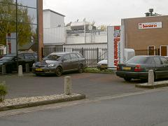

Introductie
Slachterij Beernink is een middelgrote slachterij gevestigd in Oldenzaal, die zich heeft gespecialiseerd in het slachten van runderen, schapen en geiten.
{kind=link}
Op enkele dagen in de week worden de aangevoerde dieren geslacht. Dit zijn dan dieren voor derden, huisslachtingen en dieren voor eigen rekening.
Door de opzet van het bedrijf en de onafhankelijke positie kan Beernink BV aan bijna alle specifieke wensen van zijn klanten voldoen.
Geschiedenis
Het bedrijf is in 1978 opgericht door twee broers, die nog steeds de directie vormen. Nadat zij de eerste jaren, het door hun zelf gekochte vee bij een collega bedrijf hadden geslacht besloten zij zelf een ruimte aan te kopen om een eigen slachthuis op te richten.
In de loop der jaren is dit kleine slachthuis meerdere malen verbouwd en uitgebreid tot het huidige moderne slachthuis, dat aan alle eisen voldoet. Zo is er tijdens de laatste verbouwing een nieuwe kratten wasruimte gecrëeert alsmede een officiële vee vervoersmiddel wasplaats. Op dit moment wordt er een verbouwing van de slachtbaan voorbereid.
Door vanaf het begin te werken met een vast, vakbekwaam team zijn wij uitgegroeid tot het huidige flexibele bedrijf.